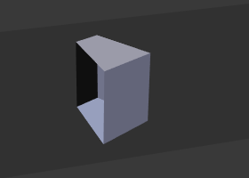

Borders¶
Xem thêm
View Clipping Border¶
Reference
| Mode: | All modes |
|---|---|
| Menu: | |
| Hotkey: | Alt-B |
Allows you to define a clipping border to limit the 3D View display to a portion of 3D space. It can assist in the process of working with complex models and scenes.
Once activated with Alt-B, you have to draw a rectangle with the mouse, in the wanted 3D View. It becomes a clipping volume of four planes:
- A right-angled parallelepiped (of infinite length) if your view is orthographic.
- A rectangular-based pyramid (of infinite height) if your view is in perspective.
Once clipping is used, you will only see what's inside the volume you have defined. Tools such as paint, sculpt, selection, transform snapping, etc. will also ignore geometry outside the clipping bounds.
To delete this clipping, press Alt-B again.
Example¶

Selecting a region. |

Region selected. |

View rotated. |
{kind=link}
The Region/Volume clipping image shows an example of using the clipping tool with a cube. Start by activating the tool with Alt-B (upper left of the image). This will generate a dashed cross-hair cursor. Click with the LMB and drag out a rectangular region shown in the upper right. Now a region is defined and clipping is applied against that region in 3D space. Notice that part of the cube is now invisible or clipped. Use the MMB to rotate the view and you will see that only what is inside the pyramidal volume is visible. All the editing tools still function as normal but only within the pyramidal clipping volume.
The dark gray area is the clipping volume itself. Once clipping is deactivated with another Alt-B, all of 3D space will become visible again.
Render Border¶
Reference
| Mode: | All modes |
|---|---|
| Menu: | |
| Hotkey: | Ctrl-B, Ctrl-Alt-B |
When using rendered shading mode, it can be quite slow to render the entire 3D View. To fix this, you can define a render border to render just a portion of the viewport instead of the entire viewport. A render border is defined by Ctrl-B and can be removed with Ctrl-Alt-B.
Mẹo
You can also use this border in a final render by setting a render border from within the Camera View and enabling Border in the Dimensions panel.